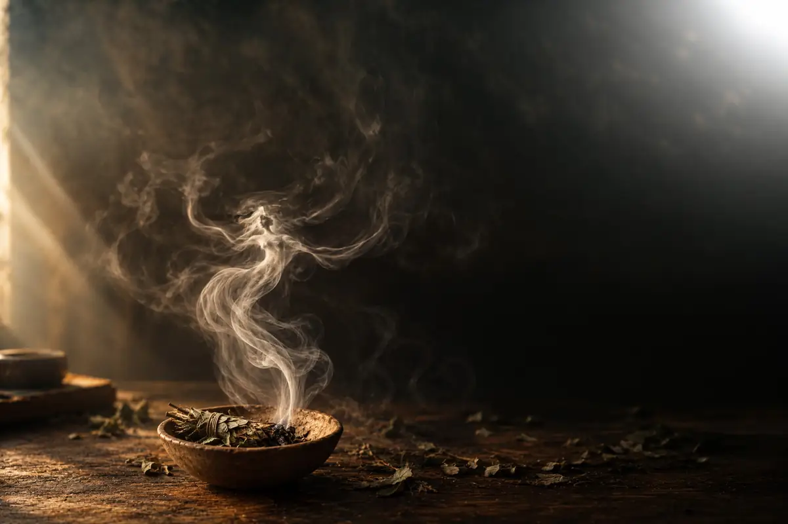

Defumação Sagrada
Você vai adentrar, de forma prática e objetiva, na sabedoria dos antigos, guiado por quem há mais de 35 anos ensina e inicia pessoas nesse caminho e, principalmente, vive aquilo que transmite.
Curso 100% online Para iniciantes e praticantes 18 aulas gravadas Rezas da tradição 2 anos de acesso
O curso
Por gerações, diferentes povos trabalharam com a fumaça em práticas de cuidado, limpeza, proteção e equilíbrio.
Mas quando ficamos apenas no ato de queimar uma planta, perdemos uma parte importante dessa prática.
Durante muito tempo, esse conhecimento foi preservado e transmitido dentro de tradições que compreendiam isso.
Por trás da fumaça existem fundamentos, forças, enteais, espíritos e antigos conhecimentos e encantamentos que determinam o resultado desta prática.
No curso Defumação Sagrada, eu vou compartilhar com você conhecimentos da botânica oculta e das tradições ancestrais para que você aprenda a reconhecer e a trabalhar com a medicina das ervas através da fumaça.
Você aprende do zero e na ordem certa: que planta usar, como preparar, o que rezar e como conduzir a fumaça com segurança. Não precisa saber nada antes.
Você finalmente recebe o fundamento por trás do que já faz: a reza certa de cada erva, o momento, a direção e o porquê de cada escolha da tradição.
Vídeo de apresentação
"Me disseram que essa erva serve para isso."
É daqui que este curso tira você
O que a planta carrega, o que a diferencia das outras e como reconhecer a potência de cada folha.
O preparo, a reza, a direção da fumaça e o modo certo de conduzir, seja em uma pessoa ou em um ambiente.
O que a tradição ensina sobre o uso de cada erva, e o fundamento que sustenta cada combinação.
+1.000
alunos já passaram pelas formações de Ramy Shanaytá
Para quem é
Conteúdo
Você receberá
Em duas etapas, da planta até a aplicação. Ramy entra no assunto e ensina, sem introdução de dez minutos e sem enrolação.
As palavras que acordam a força de cada erva, ensinadas do jeito certo, com a pronúncia e o momento de cada uma.
Misturas, preparos, tipos de defumação, rezas e as ervas uma a uma. Seu para baixar e consultar sempre que precisar.
Emitido ao final do curso.
Para perguntar, mostrar o que preparou e tirar dúvidas ao longo do caminho.
Para assistir quantas vezes quiser e voltar sempre que precisar de uma prática específica.
Acesso
As aulas ficam na Hotmart, a mesma plataforma onde você faz a compra.
Bônus desta turma
Mais de 700 páginas com misturas, preparos, tipos de defumação, rezas e as ervas descritas uma a uma. É o material de consulta que fica com você depois que o curso termina.
Aqui o livro é digital, para ler no celular ou no computador. A versão impressa é vendida à parte e não entra neste curso.
Investimento
O curso completo custaR$ 597,00
Nesta turma, você leva tudo por:
Esta condição termina em
10x R$ 20,07ou R$ 167,00 à vista
Garantir minha vagaCompra segura pela Hotmart. Acesso liberado após a confirmação do pagamento.
Quem conduz
Ramy Shanaytá
Ancião Guardião da Tradição Tubakwaassu
Ramy Shanaytá é xamã-cientista e guardião da sabedoria da Tradição Tubakwaassu. Há mais de 35 anos ele atua, pesquisa e vive esse universo: a botânica oculta, a força espiritual das plantas, a alquimia das ervas queimadas e as rezas da língua sagrada Abanhaenkaá, que ele ajuda a resgatar.
Preside a Ará Tembayê Tayê, instituição filantrópica e cultural fundada em 1995, e conduz há décadas a formação de alunos na medicina da floresta e nas práticas de cuidado da tradição.
No meio acadêmico é conhecido como Dr. Sergio Prancvitch, farmacêutico, bioquímico e pesquisador em fitoterapia e etnofarmacologia. Ele não usa a ciência para provar a tradição. Usa as duas, cada uma no seu próprio terreno.
"A planta sai do estado sólido e vai para o ar. Ela muda de morada. A fumaça age onde a mão não alcança."
Garantia
Entre, assista as primeiras aulas e decida com o conteúdo na frente. Se não for o que você procurava, peça o dinheiro de volta dentro de 7 dias. Sem justificativa e sem burocracia.
F.A.Q.
Consegue. O curso foi feito para todos os níveis e começa do começo: que planta usar, como preparar, como rezar e como conduzir. Se você nunca fez nada disso, vai aprender na ordem certa e sem pular etapa.
É, 100% online e gravado. Você assiste pelo computador, celular ou tablet, no seu ritmo, quantas vezes quiser dentro dos dois anos de acesso.
É, quando se sabe como. O curso trata das práticas seguras de queima, inclusive em apartamento pequeno, e também do que fazer quando não é possível queimar no ambiente.
Vale, e costuma ser quem mais se surpreende. Quem pratica há tempo sabe o que fazer. O curso traz a reza certa, o fundamento e o porquê, que é o que quase ninguém aprendeu.
Não. A queima de ervas é muito usada em pessoas, e o curso trata disso com a mesma atenção: o banho de fumaça sagrada, o encantamento, como conduzir a fumaça em alguém, com que erva, com que reza e em que momento. O caminho de quem cuida de outras pessoas tem aula própria.
Não. O conhecimento parte da Tradição Tubakwaassu e da botânica oculta, e se aplica seja qual for o seu caminho espiritual. Não é exigida filiação a nada.
São duas etapas e você segue no seu ritmo. Como o acesso é de dois anos, dá para fazer no tempo que couber na sua rotina e voltar quantas vezes quiser.
São diretas. Cada aula trata do seu tema e termina. Sem história de vida, sem enrolação.
Consegue. O curso trata da aplicação em apartamento, casa, ambiente externo, sítio, plantação, no carro e no espaço onde você recebe pessoas.
Só o básico: um turíbulo de barro, carvão ou madeira para a brasa e as ervas secas. As ervas você pode comprar prontas e, no curso, também aprende a colher e secar as suas.
Sim, no grupo privado de alunos no WhatsApp, por dois anos.
Assim que o pagamento é aprovado, você recebe o acesso por e-mail. É na hora.
As plantas, as rezas e as práticas de cuidado, limpeza, proteção e equilíbrio, em pessoas e em ambientes, transmitidas por quem guarda essa tradição há mais de 35 anos.